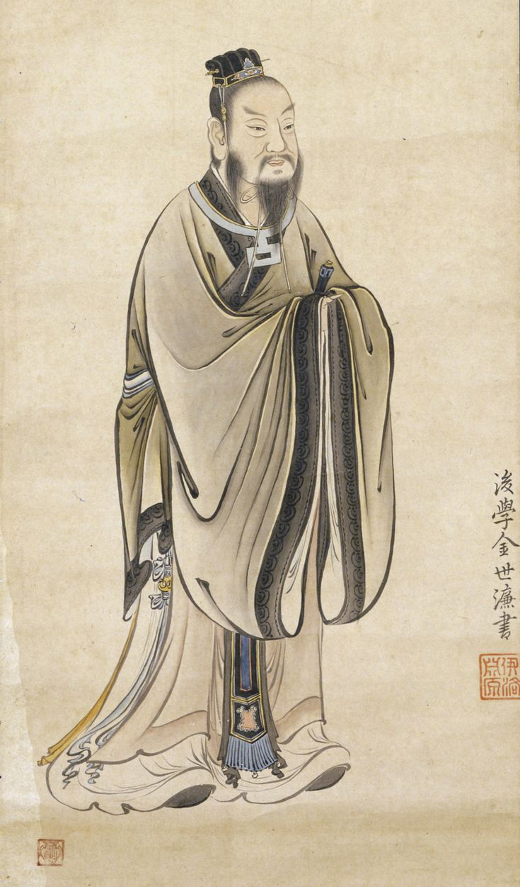
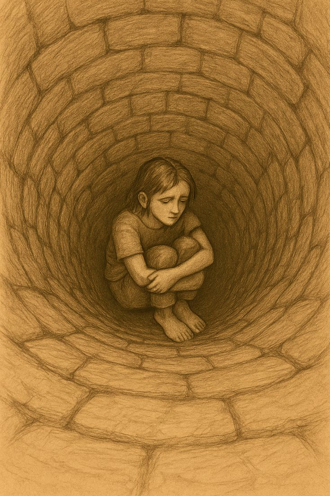

Who Was Mencius?
Mencius, also known by his Chinese name Mengzi, was an influential Chinese philosopher of the Warring States period and one of the most important thinkers in the development of Confucian philosophy. Traditionally dated to approximately 372–289 BCE, he lived more than a century after Confucius and became one of the most influential interpreters and defenders of the Confucian tradition during an age of intense philosophical and political competition.
Mencius is especially famous for his argument that human nature is good, or more precisely, that human beings possess innate moral tendencies capable of developing into full virtue. He used examples such as spontaneous compassion and moral discomfort to argue that the beginnings or "sprouts" of moral virtue are already present in human beings, although they require proper cultivation, reflection, and a supportive social environment to grow.
His philosophy places particular importance on benevolence (ren), righteousness, moral education, and self-cultivation. For Mencius, moral development involves protecting and extending the innate tendencies toward goodness rather than creating morality entirely through external rules or punishment. This position distinguished him from thinkers who regarded human nature as fundamentally self-interested or who placed greater emphasis on law and external control.
Mencius also developed important ideas about politics and the moral responsibilities of rulers. He argued that legitimate government should place the welfare of the people above the private interests of those in power and that a ruler who persistently abandons humane government can lose the moral basis of his authority. His thought became particularly influential through the text known as the Mencius, a collection of conversations and arguments associated with him that later became one of the central works of the Confucian tradition.
Mencius: Quick Facts
- Name — Mencius, or Mengzi (孟子)
- Period — Warring States period, traditionally dated to the fourth century BCE
- Philosophical tradition — Confucianism
- Known for — Human nature, moral cultivation, benevolence, righteousness, and political philosophy
- Famous philosophical idea — Human nature is inclined toward goodness
- Important concept — The Four Beginnings
- Political ideal — Humane and morally responsible government
- Major text — The Mencius
- Important predecessor — Confucius
- Major philosophical concern — How human beings develop moral virtue and how society should be governed
Mencius and the Warring States Period

Mencius lived during the Warring States period, a time when competing states struggled for political power and military dominance. The political fragmentation of ancient China produced intense debate about morality, government, human nature, social order, and the proper way to rule. Philosophers offered competing explanations of how peace and stability could be restored to a deeply divided world.
The period was also one of remarkable intellectual creativity. Thinkers associated with Confucianism, Mohism, Daoism, and other philosophical traditions debated the sources of human conduct and the foundations of political authority. Mencius developed his ideas within this larger intellectual environment, defending and extending what he understood to be the moral tradition associated with Confucius.
Confucian thinkers were responding to a society in which political stability and traditional social relationships were under serious pressure. Mencius addressed these problems by arguing that political authority should be connected with moral responsibility. A ruler could not be judged solely by military success, wealth, or the ability to maintain control through force.
Rather than treating successful rule as simply a matter of military strength or political power, Mencius argued that a legitimate ruler should govern through benevolence and righteousness. The welfare of ordinary people was therefore central to his political philosophy. His response to the conflicts of his age was ultimately moral: lasting political order required the cultivation of virtue in both rulers and the people they governed.
Why Is Mencius Important in Chinese Philosophy?
Mencius is important because he transformed and developed central Confucian questions about morality, human relationships, education, and government. His work provided a powerful philosophical explanation of why human beings are capable of becoming morally good and why moral cultivation should be understood as the development of capacities already present within human life.
His theory of human nature became one of the defining positions within the Confucian tradition. The argument that people possess natural moral tendencies became particularly important in later debates about whether goodness is innate or acquired. Mencius gave these questions a systematic ethical and psychological significance that influenced generations of later thinkers.
Mencius also connected personal morality with political philosophy. In his view, a society cannot be genuinely well governed merely through punishment and force. Good government requires rulers to care about the welfare of the people and to cultivate moral character themselves, because political power should serve humane purposes rather than mere private advantage.
His importance also lies in the lasting influence of the Mencius as a Confucian classic. Later scholars treated his arguments as essential to understanding questions about virtue, the heart-mind, political legitimacy, and the nature of human beings. Mencius therefore became not merely a commentator on Confucius but one of the major architects of the philosophical Confucian tradition.
What Did Mencius Believe?
Mencius believed that human beings possess the beginnings of moral virtues and that these tendencies can be developed through reflection, education, and practice. He did not argue that every person is automatically virtuous in every situation. Instead, his central claim was that human beings possess natural capacities from which genuine moral virtue can grow.
Instead, his philosophy emphasizes the difference between possessing an initial moral tendency and successfully cultivating it. Human beings can neglect or damage their moral capacities through harmful circumstances, selfish desires, or poor choices. The possibility of wrongdoing therefore does not, in Mencius' view, disprove the presence of an underlying capacity for moral development.
Mencius therefore placed considerable importance on moral cultivation. People must nourish their moral tendencies in much the same way that a plant must be cultivated if it is to grow. Virtue requires attention and sustained development rather than appearing automatically in a complete and permanent form.
His philosophy also joined ethics with political life. The moral development of individuals could not be entirely separated from the conditions under which they lived, and rulers had responsibilities for creating a society in which people could maintain stable livelihoods and develop their character. For Mencius, questions about human nature, education, and government were therefore closely connected.
Mencius on Human Nature: Is Human Nature Naturally Good?
The most famous part of Mencius' philosophy is his claim that human nature is good, or more precisely, that human beings possess natural tendencies toward moral goodness. This position is often summarized as the doctrine of the goodness of human nature, although the meaning of this claim depends on how Mencius understands moral capacities and their development.
Mencius did not mean that people never behave selfishly, violently, or unjustly. His argument concerns the natural moral capacities present in human beings. These capacities can be strengthened through cultivation or neglected through destructive habits and environments, just as a potential ability may fail to develop when the conditions necessary for its growth are absent.
His position can be understood through his famous examples involving compassion and spontaneous moral reactions. Mencius argued that people have the beginnings of moral responses before formal moral instruction has fully developed them. Such responses reveal that morality is not simply an artificial system imposed upon an otherwise morally empty human being.
This theory made human nature a central philosophical question within Confucian thought. If people possess an inherent capacity for moral development, then education should help them recover, preserve, and extend that capacity. Mencius therefore presents moral failure not as proof that humanity is incapable of goodness, but as evidence that moral capacities can be neglected, weakened, or improperly developed.
What Are the Four Beginnings in Mencius' Philosophy?
One of Mencius' most important ethical ideas is the doctrine of the Four Beginnings. These are natural moral tendencies that can develop into fully developed virtues. They describe the initial responses through which human beings are capable of moving toward a mature and stable moral character.
- Compassion — the beginning of benevolence or humaneness.
- Shame and dislike of wrongdoing — the beginning of righteousness.
- Modesty and deference — the beginning of propriety or appropriate conduct.
- A sense of right and wrong — the beginning of wisdom.
Mencius compared these moral beginnings to seeds or sprouts. They provide the starting point for moral development, but they must be cultivated if they are to become stable virtues. The metaphor is important because it suggests both natural potential and the need for appropriate conditions, attention, and continued growth.
The Four Beginnings are not merely abstract principles that a person learns from external authority. They are connected with actual human responses to situations involving suffering, wrongdoing, respect, and moral judgment. Mencius therefore places emotion and moral perception within the foundation of ethical development.
This idea gives Mencius' ethical philosophy a developmental character. Moral education is not simply about imposing rules on a morally empty individual. It is about developing capacities that are already present in human beings and learning how to extend them consistently into relationships, social responsibilities, and practical conduct.
Mencius and the Example of the Child at the Well

Mencius famously presents a thought experiment involving a child who is about to fall into a well. He argues that a person who suddenly sees such a situation would naturally experience alarm and compassion. The imagined response occurs before there is time for careful calculation about personal advantage or social reputation.
His purpose is not simply to describe an emotional reaction. He uses the example as evidence for a deeper philosophical claim: human beings possess an immediate tendency to respond to another person's suffering. The example is intended to reveal something about the structure of ordinary moral experience.
Mencius does not argue that every compassionate feeling automatically produces virtuous action. A passing response can be ignored, overcome by selfish motives, or fail to develop into a stable disposition. Nevertheless, the existence of the initial response shows, in his view, that the roots of benevolence are already present.
Mencius argues that this compassionate response is the beginning of benevolence. Moral virtue develops when such beginnings are recognized, extended, and cultivated rather than ignored. The example of the child at the well therefore became one of the most famous illustrations of his broader argument that morality grows from genuine capacities within human beings.
Mencius on Benevolence and Righteousness
Benevolence, often translated from the Confucian concept ren, is one of the central moral ideas in Mencius' philosophy. It involves humane concern for other people and is closely connected with the Confucian ideal of moral character. Benevolence is expressed not only through feeling but through the way a person treats others within the relationships and responsibilities of social life.
Mencius also emphasizes righteousness, often associated with the concept yi. Righteousness involves recognizing what is morally appropriate and acting accordingly, rather than simply pursuing personal advantage. It requires the ability to judge when gain, status, or self-interest should not determine one's actions.
These virtues are connected. A morally developed person should not merely feel compassion but should also act appropriately and responsibly in response to moral circumstances. Benevolence provides humane concern, while righteousness helps direct conduct toward what ought to be done.
Mencius' ethical philosophy therefore resists the idea that morality consists only of following external rules. Virtue involves the cultivation of the heart-mind so that moral perception, feeling, and action become increasingly integrated. The ideal person learns to respond to others with both humane concern and a developed sense of what justice and appropriateness require.
How Does Mencius Explain Moral Development?
Mencius believed that moral development requires active cultivation. Natural moral tendencies are only beginnings; they do not automatically become complete virtues. A person must preserve and develop these tendencies so that they become reliable features of character rather than occasional or temporary responses.
Moral cultivation involves learning, reflection, disciplined action, and the development of appropriate habits. A person must learn to extend concern beyond immediate circumstances and develop a stable moral character. The process requires attention to one's motives and responses, because moral capacities can be weakened when they are repeatedly ignored.
Mencius also emphasized the importance of recovering the heart-mind when it has become distracted by harmful desires or external pressures. Moral cultivation is therefore not simply the acquisition of new information. It involves rediscovering and preserving the moral capacities that make humane and righteous action possible.
Mencius also warned against trying to force moral development artificially. His famous discussion of the farmer who pulls up seedlings illustrates the danger of impatiently attempting to make moral growth happen faster than it can naturally develop. Genuine cultivation requires sustained effort, but effort must support growth rather than destroy the conditions that allow it to occur.
Mencius' Political Philosophy and Good Government
Mencius did not restrict his philosophy to individual morality. He also developed a substantial theory of government and political responsibility. Political institutions and rulers affected the moral and material conditions of ordinary life, making government an essential subject for philosophical reflection.
He argued that a ruler should govern through benevolence and righteousness rather than relying primarily on coercion, violence, or personal advantage. The welfare of the people was an important measure of whether government was genuinely successful. Political authority, in this view, carried responsibilities that could not be reduced to the simple possession of power.
Mencius therefore criticized rulers who pursued wealth or military power while neglecting ordinary people. Good government should create conditions in which people can live stable lives and develop their moral capacities. Extreme insecurity and material hardship could make moral life more difficult, which gave economic and social policy an important place in his political thought.
His ideal of benevolent government also reflects his broader philosophical belief that morality should shape human institutions. Just as individuals must cultivate virtue rather than surrender to selfish impulses, rulers must govern for more than personal gain. The quality of political life depends upon whether power is exercised with humane concern, righteousness, and responsibility toward the people.
Mencius on the People and the Responsibility of Rulers
Mencius gave an unusually strong place to the welfare of ordinary people within his political philosophy. He argued that a ruler's authority carries moral responsibilities. The people were not merely resources to be used for war, taxation, or the personal enrichment of those who held political power.
A ruler who seriously fails to govern with benevolence and righteousness may lose the moral basis of legitimate rule. Mencius therefore developed a theory in which political authority was not simply justified by possession of power. The conduct of the ruler and the effects of government upon the people mattered to the moral status of political authority.
His discussions of tyrannical rule are particularly important because they suggest that the title of ruler does not automatically make every action morally legitimate. A person who abandons the fundamental responsibilities associated with humane government may, in Mencius' moral language, forfeit the qualities that properly define legitimate rulership.
This does not make Mencius a modern democrat in the contemporary political sense. His political philosophy remained rooted in the social and political structures of ancient China. Nevertheless, his emphasis on the ruler's responsibility toward the people became an important feature of later Confucian political thought and provided a moral standard against which political power could be judged.
Mencius and the Mandate of Heaven
Mencius' political philosophy is closely connected with the ancient Chinese idea of the Mandate of Heaven, according to which legitimate rule depends upon moral conduct and proper government. The idea provided a way of explaining political change without treating hereditary possession of power as an unconditional guarantee of permanent legitimacy.
In Mencius' thought, a ruler who seriously abandons benevolence and righteousness cannot simply justify his rule by appealing to authority or hereditary position. Political status must be understood in relation to moral responsibility and the actual consequences of rule for the people.
Mencius also connects Heaven's mandate with the condition of the people. Rather than presenting Heaven as a simple source of arbitrary political commands, his discussions emphasize the moral significance of humane rule and the visible effects of government. Political legitimacy is therefore interpreted through an ethical framework.
This provides a moral framework for understanding political legitimacy. The ruler has responsibilities toward the people, and political authority is connected with fulfilling those responsibilities. The Mandate of Heaven consequently became an important concept through which later Chinese thinkers could discuss the relationship between moral virtue, political success, and the loss of legitimate authority.
Mencius and Confucius: What Is the Difference?
Mencius considered himself part of the Confucian tradition and developed many themes associated with Confucius. Both philosophers emphasized moral cultivation, humane relationships, ethical conduct, education, and responsible government. Each regarded the development of character as essential to the health of both personal and political life.
One major difference is that Mencius developed a much more explicit philosophical argument about human nature. His famous claim that human nature is inclined toward goodness became a central feature of his interpretation of Confucian ethics. He explored the psychological beginnings from which virtues such as benevolence and righteousness could develop.
Mencius also lived in a different political and intellectual environment from the one traditionally associated with Confucius. The Warring States period encouraged increasingly systematic debate about rival theories of government, human motivation, and moral education. His philosophy reflects an effort to defend Confucian moral ideals against competing approaches.
Mencius can therefore be understood not simply as repeating Confucius but as developing Confucian philosophy in response to the philosophical debates of his own period. His interpretation became so influential that later Confucian traditions often treated him as one of the most important successors to Confucius and as a major authority on the meaning of Confucian moral thought.
Mencius and Xunzi on Human Nature
Mencius' theory of human nature became especially significant because another major Confucian philosopher, Xunzi, later defended a very different position. Their contrasting accounts of human nature became one of the most famous philosophical disagreements within the broader Confucian tradition.
Mencius argued that human beings possess natural tendencies toward moral goodness. Xunzi, by contrast, became associated with the view that human nature is naturally oriented toward desires that require education, ritual, and deliberate cultivation to become properly ordered. The disagreement concerns how the starting point of moral development should be understood.
Despite their differences, both philosophers regarded cultivation as essential. Mencius did not believe that people become virtuous without effort, and Xunzi did not deny the importance of moral transformation. Their disagreement is therefore more complex than a simple contrast between optimism and pessimism about human beings.
The contrast between Mencius and Xunzi became one of the most important debates within the later development of Confucian philosophy. It raised enduring questions about whether morality grows primarily from natural capacities, social formation, deliberate discipline, or some combination of these elements. Later scholars repeatedly returned to this debate when discussing human nature.
Mencius and Moral Psychology
Mencius' discussion of human nature can also be understood as an early form of moral psychology. He asks why people are capable of compassion, shame, respect, and moral judgment. Rather than beginning with abstract rules alone, he examines the responses and capacities through which human beings actually encounter moral situations.
His answer begins with natural moral tendencies rather than with the assumption that morality is completely imposed from outside. Education and social practices remain essential, but their role is to develop and extend capacities already present in human beings. Moral life is therefore understood as both natural and cultivated.
Mencius also gives an important role to emotion. Compassion and shame are not treated as irrational obstacles that must simply be overcome. When properly developed, they can contribute to moral perception and ethical action. At the same time, emotional responses must be cultivated and integrated into a broader moral character.
This makes Mencius' philosophy especially important for the study of the relationship between nature, education, habit, emotion, and moral character. His ideas continue to invite comparison with later philosophical discussions about moral sentiment, motivation, empathy, and the psychological foundations of ethical behavior.
Mencius on Education and Moral Character
Education plays an important role in Mencius' understanding of moral development. Human beings must learn how to recognize, preserve, and extend their moral tendencies. Education helps prevent the initial beginnings of virtue from being neglected or overwhelmed by habits and circumstances that encourage selfish or harmful conduct.
Good education should therefore contribute to the formation of character rather than simply provide practical knowledge or material skills. Learning has an ethical purpose because it helps the individual understand how to act appropriately within relationships, responsibilities, and difficult moral circumstances.
Mencius also connects learning with reflection and self-examination. Moral improvement requires more than memorizing teachings or obeying external commands. A person must actively develop the heart-mind and learn to recognize the moral significance of particular situations.
The aim of moral education is the development of a person capable of acting with benevolence, righteousness, wisdom, and appropriate conduct. Education, in this sense, is part of a lifelong process of cultivation through which the individual develops the capacities necessary for both personal virtue and responsible participation in society.
Mencius and the Heart-Mind
Mencius frequently discusses what is translated into English as the heart-mind, using the Chinese concept xin. The term does not map neatly onto the modern distinction between emotion and rational thought. It refers to a dimension of human life involved in feeling, understanding, evaluating, and directing action.
In Mencius' philosophy, the heart-mind is closely connected with moral perception, emotional response, judgment, and the development of virtue. It is through the heart-mind that people recognize suffering, experience shame, perceive moral distinctions, and respond to the demands created by their relationships with others.
The Four Beginnings therefore illustrate how emotional and evaluative responses can become the foundation of developed moral capacities. Compassion, for example, is not treated merely as a private feeling but as a beginning that can be cultivated into a broader disposition of humane concern.
The idea of the heart-mind also helps explain why Mencius does not sharply divide reason from emotion in the modern Western sense. Moral knowledge, feeling, judgment, and cultivated character are deeply interconnected. To understand his philosophy, it is therefore important to see moral development as involving the transformation of the whole person rather than the simple application of abstract rules.
Mencius' Main Philosophical Ideas
Although Mencius addressed many subjects, several ideas are particularly important for understanding his philosophy. Together, these ideas connect his account of human nature with ethics, moral psychology, education, and political philosophy.
Human Nature Is Inclined Toward Goodness
Mencius argued that human beings possess natural moral tendencies. These tendencies can be developed into virtues through cultivation. His claim does not mean that people always behave well, but that the foundations for moral goodness are genuinely present within human beings.
The Four Beginnings
Compassion, shame and dislike, modesty and deference, and the sense of right and wrong are described as beginnings of important moral virtues. These initial tendencies correspond to the development of benevolence, righteousness, propriety, and wisdom.
Moral Cultivation
Natural moral tendencies must be cultivated rather than neglected. Moral development requires practice, reflection, education, and appropriate conduct. Like sprouts that require proper care, moral capacities can either develop or fail to reach their full potential.
Benevolent Government
A ruler should govern through benevolence and righteousness and take seriously the welfare of the people. Political success cannot be measured only by military power or wealth because the moral quality of government matters to its legitimacy.
Moral Responsibility of Rulers
Political authority carries moral responsibilities. A ruler's conduct affects the legitimacy of political rule, and severe failures of humane government undermine the moral basis upon which authority is properly exercised.
Human Moral Development
Mencius presents moral growth as the development and extension of capacities already present in human beings. His philosophy therefore joins nature and education: people possess moral beginnings, but they require cultivation if those beginnings are to become stable virtues.
What Is the Book of Mencius?
The Mencius, also known as the Mengzi, is the major classical text associated with Mencius. It preserves philosophical discussions, conversations, arguments, and teachings attributed to him. The work is the principal source through which readers encounter his ideas about ethics, human nature, education, and government.
The text is traditionally divided into seven books. It contains discussions of human nature, ethics, government, moral cultivation, political responsibility, and debates with other philosophical positions of the Warring States period. Its dialogical form often presents Mencius responding directly to rulers, critics, and students.
The Mencius is particularly valuable because philosophical arguments are frequently presented through concrete examples and conversations. Discussions of a child in danger, moral sprouts, agricultural cultivation, political hardship, and human relationships are used to illuminate broader claims about the nature of ethical life.
Like other early Chinese philosophical texts, the work has a complex textual history. It is best understood as the principal classical source for reconstructing Mencius' philosophy rather than simply as a modern biography written directly by Mencius. The text has also been interpreted differently across centuries of Chinese and international scholarship.
What Does Mencius Mean?
Mencius is the Latinized form of the Chinese name Mengzi, which can be understood as "Master Meng." The title follows an older convention of rendering the names of major Chinese philosophers in forms that became familiar in Western scholarship.
His personal name is traditionally given as Meng Ke. The title "Mencius" became the familiar Latinized form through the history of Western scholarship on Chinese philosophy, while Mengzi remains the standard form used in modern Chinese transliteration.
The name Mengzi is also used for the classical text associated with his teachings. This can sometimes create confusion for modern readers, since the same term may refer either to the philosopher or to the work traditionally connected with his philosophical school.
Similar naming conventions appear in the history of several early Chinese philosophers. Understanding both the traditional Latinized name and the modern transliterated form is useful when consulting different translations, scholarly works, and histories of Chinese philosophy.
What Do We Actually Know About Mencius?
Much of what is known about Mencius comes from the classical text associated with him and from later historical traditions. As with many ancient philosophers, separating historical biography from later literary tradition requires caution. Scholars distinguish between the broad historical existence and influence of the thinker and the exact accuracy of every story preserved about his life.
Relatively Well Established
- Mencius was an important thinker in the Confucian tradition.
- He lived during the Warring States period.
- His philosophy strongly emphasizes moral cultivation and human nature.
- He defended the idea that human nature possesses tendencies toward goodness.
- His thought includes a substantial theory of ethical government.
- The text known as the Mencius is the principal classical source associated with his philosophy.
These points are supported by the central place of Mencius within the history of Confucian thought and by the long scholarly tradition of studying the text associated with his teachings. Questions become more difficult when historians attempt to reconstruct precise details about his movements, individual conversations, or the exact circumstances in which particular philosophical arguments were first presented.
Traditionally Reported
- Various details about his life and travels among Chinese states.
- Specific conversations between Mencius and rulers.
- Some biographical details preserved by later historical traditions.
Traditional accounts remain historically and philosophically valuable, but they should be interpreted with awareness of the nature of ancient textual transmission. A conversation preserved in a classical work may communicate an authentic philosophical position without allowing modern historians to establish every detail of the original historical setting with complete certainty.
Important Scholarly Caution
- Not every story surrounding Mencius should automatically be treated as a verbatim historical record.
- The classical text has a complex history of transmission and interpretation.
- Translations of important Chinese philosophical terms can differ significantly in English.
For this reason, careful study of Mencius benefits from distinguishing historical evidence, textual interpretation, and later tradition. Terms such as human nature, goodness, heart-mind, benevolence, and righteousness can carry meanings that do not perfectly correspond to any single English word, making translation and interpretation central parts of understanding his philosophy.
Mencius' Influence on Chinese Philosophy
Mencius became one of the most influential interpreters of Confucianism. His arguments about human nature, moral cultivation, and political responsibility shaped later Chinese philosophical debates. His interpretation helped establish human moral potential as one of the central questions through which Confucian ethics would be understood.
His influence became particularly significant in the development of Neo-Confucianism during later periods of Chinese intellectual history. Thinkers such as Zhu Xi treated the Mencius as a major classical source for Confucian learning, and the work became closely connected with the educational and philosophical traditions that shaped later Chinese scholarship.
Mencius' theory of human nature also became an important point of comparison with other Confucian thinkers, particularly Xunzi, whose understanding of human nature differed significantly from his own. Their disagreement encouraged later philosophers to examine more closely the relationship between natural tendencies, education, ritual, desire, and moral transformation.
Beyond Chinese intellectual history, Mencius has also become important in modern comparative philosophy. His ideas are studied in relation to moral psychology, virtue ethics, political legitimacy, and theories of human motivation. The continuing relevance of his thought lies partly in the enduring question at its center: how do human beings develop the capacity to live morally?
Mencius' Philosophy Explained Simply
Mencius was a Confucian philosopher who asked an important question: Are human beings naturally capable of moral goodness? His philosophy attempts to explain why people can feel compassion, recognize wrongdoing, and develop into genuinely virtuous human beings.
His answer was that human beings possess natural moral tendencies. These tendencies can grow into virtues if they are properly cultivated, but they can also be neglected or damaged. Being capable of goodness, therefore, does not mean that a person will automatically make good choices in every situation.
Mencius believed that moral life is similar to the cultivation of a living thing. A seed or sprout has the potential to grow, but it still requires the right conditions and care. In the same way, compassion, shame, moral judgment, and respect must be developed into stable qualities of character.
- Main question: What is human nature like?
- Answer: Human beings possess natural tendencies toward moral goodness.
- Four Beginnings: Compassion, shame and dislike, modesty and deference, and a sense of right and wrong.
- Ethical goal: Develop these tendencies into stable virtues.
- Political ideal: Humane and righteous government.
- Tradition: Confucian philosophy.
Put simply, Mencius believed that people have the capacity to become morally good, but this capacity must be actively developed. The same principle applies to political life: just as individuals should cultivate virtue, rulers should exercise power with humane concern and responsibility toward the people.
Frequently Asked Questions About Mencius
Who was Mencius?
Mencius, or Mengzi, was an influential Chinese Confucian philosopher of the Warring States period. He is especially known for his theory that human nature is inclined toward goodness.
What is Mencius famous for?
Mencius is famous for his philosophy of human nature, the Four Beginnings, moral cultivation, benevolence, righteousness, and his theory of ethical government.
What did Mencius believe about human nature?
Mencius argued that human beings possess natural moral tendencies toward goodness. These tendencies must be cultivated in order to develop fully into virtues.
What are the Four Beginnings according to Mencius?
The Four Beginnings are compassion, shame and dislike of wrongdoing, modesty and deference, and a sense of right and wrong. Mencius connected these beginnings with benevolence, righteousness, propriety, and wisdom.
Did Mencius believe humans are completely good?
Mencius' claim is more precise than saying that every human being is always morally good. He argued that human beings possess natural moral tendencies that can develop into virtue but can also be neglected or corrupted.
What is Mencius' philosophy of government?
Mencius argued that rulers should govern through benevolence and righteousness and should take the welfare of the people seriously. Political authority carries moral responsibilities.
What is Mencius' most famous idea?
His most famous philosophical idea is that human nature is inclined toward goodness. He supported this position through his account of the Four Beginnings and examples such as the spontaneous compassion people feel when witnessing a child in danger.
What is the Mencius book?
The Mencius, or Mengzi, is the principal classical text associated with Mencius. It contains discussions of ethics, human nature, political philosophy, moral cultivation, and Confucian thought.
Who influenced Mencius?
Mencius developed his philosophy within the Confucian tradition and regarded Confucius as an important predecessor. His thought also developed in response to the broader philosophical debates of the Warring States period.
What is the difference between Mencius and Xunzi?
Mencius argued that human beings possess natural tendencies toward goodness. Xunzi became associated with a contrasting position in which human desires require deliberate transformation through education, ritual, and cultivation.
Why is Mencius important today?
Mencius remains important because his philosophy raises enduring questions about human nature, moral development, education, compassion, political responsibility, and the relationship between personal ethics and government.
Related Chinese Philosophers and Thinkers
Mencius belongs to the wider tradition of Chinese philosophy. Explore other thinkers who developed different approaches to ethics, government, human nature, knowledge, and reality.
Philosophical Traditions Connected to Mencius
Mencius is most strongly connected with Confucian philosophy, particularly its traditions of moral cultivation, benevolence, righteousness, education, and ethical government.
Why Mencius Still Matters
Mencius remains one of the most important figures in the history of Chinese philosophy because he developed a powerful account of human moral potential. His claim that human beings possess beginnings of moral goodness provided a distinctive answer to the question of how ethical character is possible.
His philosophy also connects individual morality with political life. For Mencius, good government cannot be separated completely from the moral character of rulers and the welfare of the people.
His questions remain relevant to philosophy today: Are human beings naturally moral? How does compassion become virtue? What role should education play in developing character? And what makes political authority morally legitimate?
Explore Great Philosophers